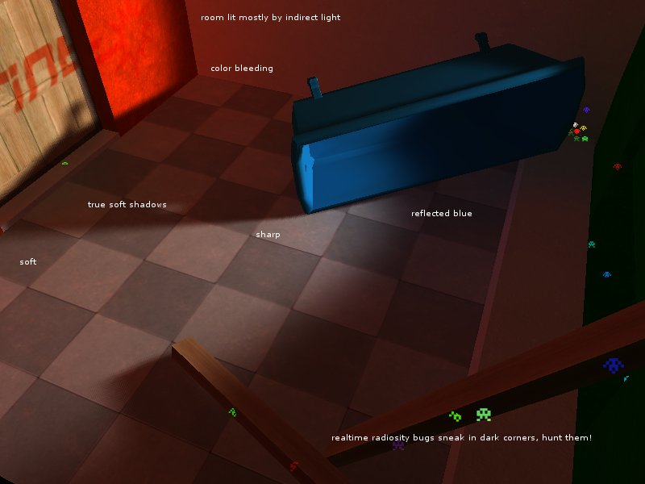

| Home | Software | Articles | Photos |
|---|
Bugs sneak in dark corners, hunt them!
(In fact, they are space invaders!)
Realtime Radiosity Bugs present experimental concept of game based on realtime updated
global illumination, realtime radiosity.
The demo contains realtime radiosity with true soft shadows and color bleeding, all coming from
dynamic light source you can control.
To run it, you need OpenGL 2.0 capable graphics card, eg. GeForce 6100 or higher, Radeon 9500 or higher, with recent drivers.
Nothing in the demo is precalculated, you can load your own .3ds scene.
Download REALTIME RADIOSITY BUGS - 6MB, RAR, for Windows
Our new work: Go for Lightsprint Realtime Global Illumination Demo!
Lightsprint.com, realtime radiosity middleware used in the demo
RealtimeRadiosity.com, rendering, global illumination and realtime radiosity news
Integration, article on integration of realtime radiosity into any renderer
Stepan Hrbek, dee at dee.cz
Petr Stastny, raist at raist.cz

{kind=link}
{kind=link}
{kind=link}
{kind=link}
{kind=link}